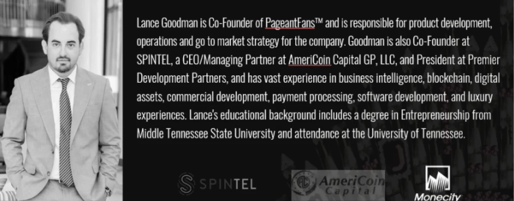

<link rel="stylesheet" href="../../css/aboutus.css" />
<section>
    <nav class="headerFooter">
        <div class="news-header-content">
            <p>ABOUT US</p>
        </div>
        <video autoplay loop src="../../assets/videos/About.webm"></video>

    </nav>
    <div class="separador"></div>

    <div class="hero">
        <video autoplay loop src="../../assets/videos/backgroundStar.webm"></video>

        <h1>Founders</h1>
        <div class="content-information">
            <div class="fundadores">
            </div>
            <div class="ceos">
                <h2>Thom Brodeur</h2>
                <h3>FOUNDER & CEO</h3>
                
            </div>
            <div class="ceos">
                <h2>Lance Goodman</h2>
                <h3>Co-Founder</h3>
                
            </div>
            <div class="pageant-description">
                <h4>PageantFans</h4>
                <p class="textabout">PageantFans™ is the only creator and fan app addressing the unmet need of the 700 million+ pageant
                    fans and nearly 10 million beauty pageant contestants and queens who compete in more than 350,000
                    pageants around the world every year. <br><br>
                    Led by a team of technology and pageant industry innovators, PageantFans is the only app of its kind
                    tailored to the global pageant ecosystem, combining content, community and commerce all under one
                    digital roof. <br><br>
                    PageantFans is slated to achieve a $1B valuation in less than 6 years by disrupting the $32B
                    worldwide pageant industry. Say hello to the next unicorn in tech entertainment.</p>
            </div>
        </div>
    </div>
</section>